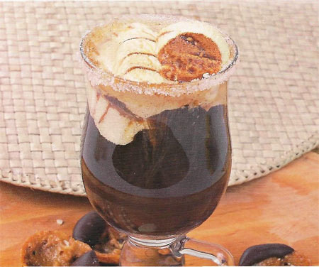

Кофе Глясе
 Кофе гляссе готовится не по определенному рецепту — это просто импровизация, которая произошла очень давно, и сейчас никто даже и не знает, из чего этот кофе состоит. Некоторые считают, что кофе гляссе – это кофе с ликером и кубиком льда. Другие утверждают, что гляссе – это кофе с яичным желтком. Но, иные источники твердят, что кофе гляссе основан на ванильном мороженом или же пломбире. Для чего же придуман кофе гляссе? Есть люди, которые просто не могут жить без кофе, которым этот напиток действует как лекарство, например, от головной боли. Но, в жаркую погоду, пить горячий напиток просто невозможно. Для этого существует замечательный кофе гляссе, который пьется в холодном виде. Название такого напитка необычное, хотя в приготовлении он очень прост. Вообще, гляссе – это холодный кофейный напиток с добавлением мороженого. В качестве посуды для наполнения гляссе используют прозрачные стаканы или бокалы. Когда впервые приготовлен такой напиток неизвестно и какой его первоначальный рецепт также никто не знает, но существует версия, что родиной кофе гляссе является Австрия. Может быть и хорошо, что нет определенного рецепта, потому что каждый может выбрать на свой вкус. Можно привести некоторые рецепты кофе гляссе и выбрать лучший для себя.